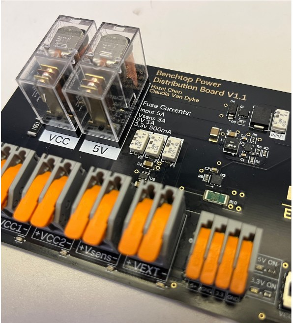
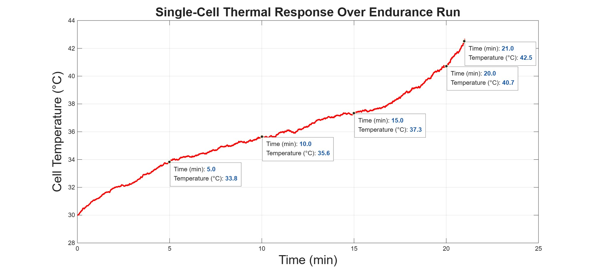
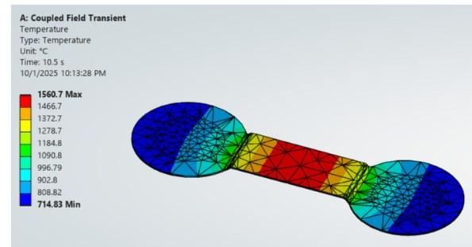
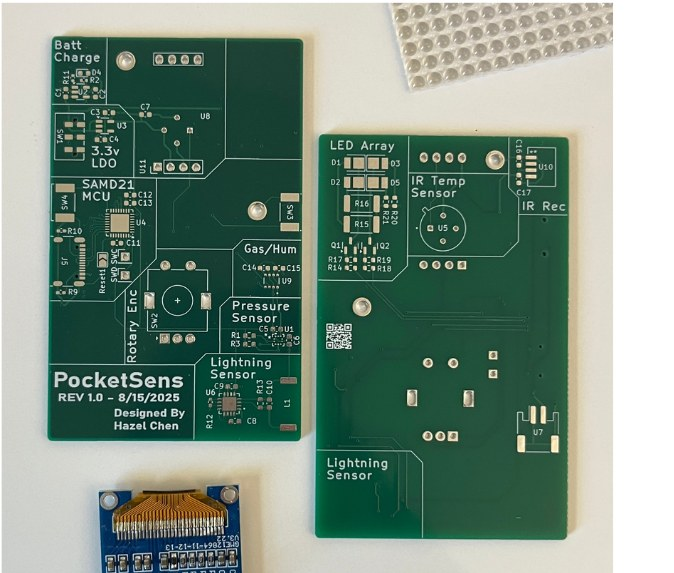
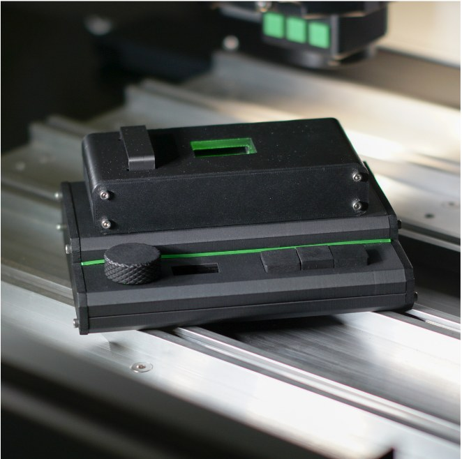

Hazel Chen
Third-year mechanical engineering student at the University of Virginia, minoring in electrical engineering, focused on electric vehicles and lithium-ion battery packs.
I lead the electrical and tractive battery subteam on Virginia Motorsports' FSAE electric car, where I work on the tractive battery and the high-voltage electronics around it. On my own time I build boards and devices, from a film-scanning light source to a pocket sensor kit. I like taking a project all the way from schematic and CAD to a working, tested part.
Electric vehicle and battery
Projects I worked on for Virginia Motorsports, UVA's Formula SAE team.
High Voltage Controller (HVC)
One board for everything between the tractive battery and the car: precharge, contactors, isoSPI, and safety latches.
Altium Designer
Benchtop Power Distribution Board
Switched, fused, and current-sensed 5 V, 3.3 V, and input rails for bench-testing custom PCBs.
Altium Designer
Tractive Battery Thermal Model
MATLAB model predicting cell temperature and state of charge over a full FSAE endurance run.
MATLAB
Fusible Link Simulation
Coupled electro-thermal Ansys model of nickel-strip fusible links for a cylindrical-cell pack.
Ansys Mechanical, Workbench
Personal builds
Boards and devices I designed and built on my own.

PocketSens Portable Sensor Suite
Handheld board measuring pressure, gas, humidity, IR temperature, and lightning, on a SAMD21 with LiPo charging.
KiCad, Arduino IDE
Future Frame LightCore
Five-channel RGB, white, and IR light source for film scanning, with its own enclosure and thermal design.
KiCad, Fusion, CircuitPython
Future Frame Hybrid Viewfinder
Optical viewfinder with an infinity-focused display overlay, using CNC-machined acrylic lenses.
Autodesk Fusion (CAD and CAM)